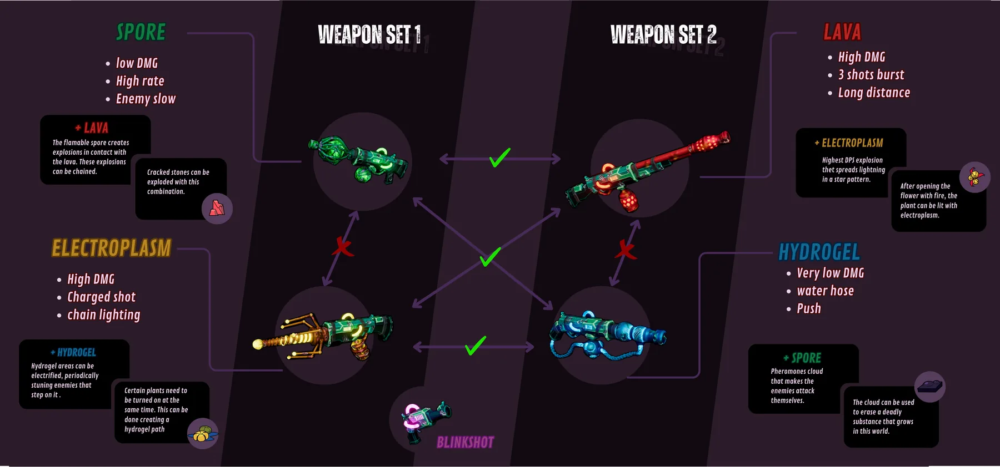

Bugs 'N' Guns · 01
Game Design
Shaping the concept of Bugs 'N' Guns from the very start to the vertical slice: core loop, design pillars and documentation.
At a glance
- Scope
- From ideation to the vertical slice
- Foundations
- Core gameplay loop, 3 core verbs and 3 experience pillars
- Documentation
- GDD sections on 3Cs, combat, encounters, enemies, weapons and interactables
- Tools
- Notion, Photoshop and Illustrator
My role
As a designer, I have been deeply engaged in shaping the game concept from the start to the vertical slice. I conceptualized the core gameplay loop and established the fundamental design pillars that have influenced all our design decisions.
I have consistently contributed to and participated in all design meetings, playing a crucial role in every decision throughout the game's development.
I also contributed to the documentation of the GDD for Bugs 'N' Guns, focusing primarily on the 3Cs (Character, Camera, Control) and the sections related to combat, encounters, enemies, weapons and interactive elements.
To achieve this, we used Notion to create a comprehensive GDD, and tools like Photoshop and Illustrator to produce detailed documentation for art and programming purposes.
Shared vision
One of the most challenging tasks in design is to ensure that everyone shares the same vision for the game.
However, it's also the most important, because otherwise each team member will have a different idea of what is being made, leading to aimless decision-making that can harm the final result.
To tackle this in the design team, we established three pillars and three verbs to build the gameplay upon:
- Core verbs
- EscortCooperateShoot
- Experience pillars
- ReactivityDependenceFrenzy
From these foundations, we designed the entire game, from the core loop to the levels, including weapons, enemies, elemental interactions, and the rest of the mechanics and dynamics present in Bugs 'N' Guns.
Coming to these conclusions was undoubtedly the most time-consuming part of our discussions and meetings. However, once we established the anchor on which all our decisions pivoted, the rest came much more easily and naturally (not to say there weren't any discussions), as it was no longer about designing based on what each team member believed to be the most fun, but rather on what best supported those anchors.
That way, when discussing any feature, we always referred back to what aligned best with our pillars to make the decision. Even if another idea seemed more fun to you, ultimately the team would conclude what was best.
Pillars in practice
A very representative example of how we followed our pillars is the element system, one of the central axes on which combat revolves. Each design decision traces back to a verb or a pillar:
CooperateDependence
Each player has two elemental weapons, but a player's weapons only combine with those of the other player, never with their own. Without mutual assistance, it is impossible to progress in the adventure.
Shoot
All the actions and puzzles that players have to solve are done by shooting, including the element puzzles.
Escort
Besides combat, the element system is used in the puzzles, where players combine their weapons to escort the train through the hostile terrains of Bugs 'N' Guns.
Frenzy
A very fast-paced combat was established to generate frenzy.
Reactivity
Dynamically changing environments and situations make players take on-the-fly decisions: we change the environment or add obstacles that players have to deal with while escorting the train.
Elements & weapons
After establishing our pillars, we began to develop the mechanics and dynamics that would make up the game. Each player carries two weapons which, when combined with the other player's, produce powerful interactions either on enemies or on the ground.

Gameplay trailer